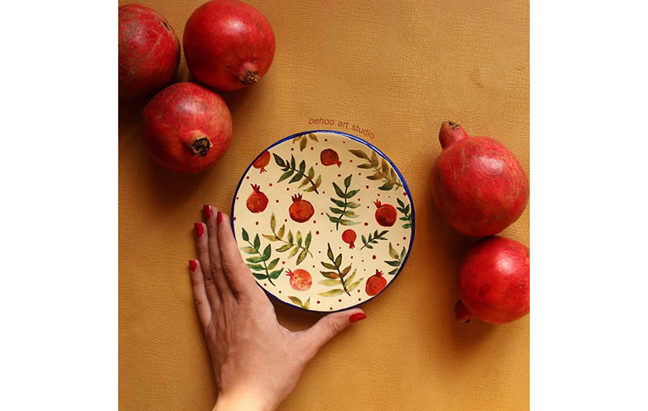

میوههای شب یلدا
میوهها جزئی اصلی از سفره یلدا هستند. در این سفره نقش اصلی را میوههای سرخ رنگ بر عهده دارند. رنگ سرخ این میوهها نماد خورشید است.
انار
انار میوه اصلی سفره شب یلدا ست. پیشینیان انار را میوه باروری و برکت میدانستند. آنها این معنا را از دانههای زیاد آن دریافت میکردند. همچنین انار به خاطر رنگ قرمزش نماد شادی و خورشید است. در واقع خوردن انار در شب یلدا به خاطر اعتقاد به تأثیر جادوی سرایتی آن بوده است. یعنی آنها با توسل به انار و خوردن آن برکت را از دانههای زیاد آن میگرفتند و نیروی باروری را در خود افزایش میدادند. به همین ترتیب یکی از میوههایی که در خوانچه یلدای عروس میگذارند انار است.
این میوه از دوران بسیار قدیم میوهای مقدس شناخته شده است. انار حتی در ادیان بزرگ دنیا جایگاه ویژهای دارد. در اساطیر و افسانهها هم ذکر آن رفته است. در دین زرتشتی انار از درختان مینوی است و از عناصر مقدس و خجسته به شمار میرود. زرتشتیها از شاخهها و میوه آن در مراسم دینی خود استفاده میکنند. انار از دید مسلمانان هم میوهای مقدس بوده و در قرآن کریم از آن بهعنوان میوهای بهشتی نام برده شده. خوردن این میوه توسط بزرگان دینی توصیه شده است.
هندوانه
هندوانه هم مثل انار میوه مخصوص سفره یلدا ست. اما آیا خوردن هندوانه اول سرما عجیب نیست؟ باید گفت که همه میدانیم هندوانه میوهای تابستانی است؛ پس هندوانه علاوه بر سرخیش نمادی از خورشید است و یادآور گرمای تابستان و حرارت است.
باور بر این بوده که اگر مقداری هندوانه در شب چلّه بخورند؛ در سراسر چلّه بزرگ و کوچک، از سرما و بیماری در امان خواهند بود. همچنین هندوانه هم مثل انار از میوههای پردانه است و نماد برکت و فراوانی.
میوههای پاییزی
از دیگر میوههای سفره یلدا میتوان انواع میوههای پاییزی را نام برد. در گذشته به همراه انار و هندوانه، میوههای فصلی را هم در سفره میگذاشتند. میوههایی مثل پرتقال و انواع مرکبات، سیب، خرمالو، گلابی و حتی لبو و کدو تنبل میتوانند جایی در سفره یلدا داشته باشند.